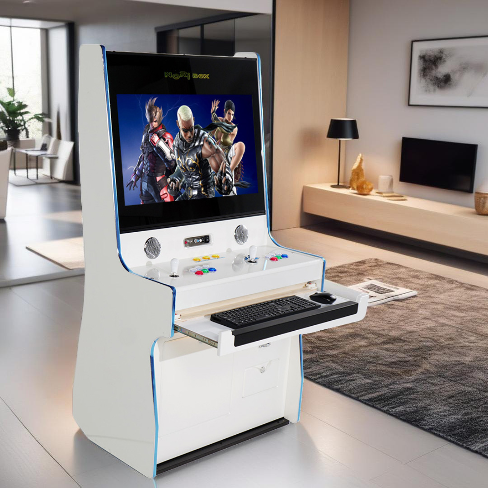

우리 공간에 맞는 게임기,
어떻게 고를까요?
설치 공간과 이용 인원부터 살펴보는 제품 선택 가이드입니다.
읽을 준비 중
SCROLL
아빠가 즐기던 게임을 아이가 먼저 켜는 순간. 그때 노리박스의 역할은 제품을 넘어섭니다.
“지금은 아이와 새로운 추억을 만들고 있네요.”
스마트스토어에서 판매 중인 대표 제품을 확인해 보세요.
제품 정보를 불러오고 있습니다.
제품을 고르고 오래 즐기는 데 도움이 되는 이야기를 전합니다.